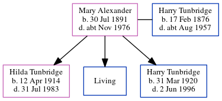

Walter Fielder 1908 - c2000
[ Home ] | [ Calendar ] | [ Surnames Index ] | [ Errors ] | [ Family History ]Walter Fielder, the husband of Grace Clara Tunbridge (the second cousin once-removed on the father's side of Nigel Horne), was born on 20 Jun 19081,2 and. He married Grace (with whom he had 1 surviving child, ) at St Luke's Church, Eltham, London, England on 27 Jun 19363 (Apr/May/Jun). On 29 Sept 1939, he was living at 177 Footscray Road in Eltham1.
He died c. Feb 2000 in Maidstone, Kent, England2.
Citations
- 1939 Register - Findmypast (was the head of the household)
- England & Wales deaths 1837-2007 - Findmypast
- England & Wales, Marriage Index: 1916-2005 Online publication - Provo, UT, USA: The Generations Network, Inc., 2009.Original data - General Register Office. England and Wales Civil Registration Indexes. London, England: General Register Office. © Crown copyright. Published by permission of the Cont
Media
Kent & Sussex Courier - 3 Jul 1936

England & Wales marriages 1837-2005 - BMD/M/1936/2/AZ/000464/032
England & Wales deaths 1837-2007 - BMD/D/2000/1/83657434
1939 Register - TNA-R39-0657-0657K-005-31
Family Tree
Map
Generated by ged2site. Last updated on Jul 3, 2024
Known Issues
Date of birth is known, but not place
Sep 29, 1939: not living at same address as spouse Grace Tunbridge ('177 Footscray Road, Eltham, London, England'/'177 Footscray Road, New Eltham, London, England')
No records of living with anyone